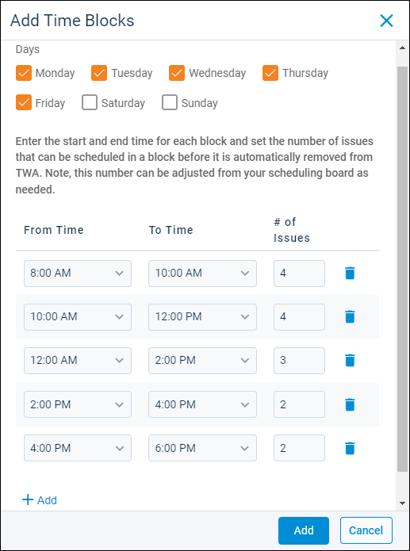

Source: https://rmxhelp.rentmanager.com/Topics/Express/KB/Maintenance-Scheduling-Set-Up.htm
Set Up Maintenance Scheduling
The Maintenance Scheduling feature allows you to easily coordinate your day-to-day issues and technician schedules to make the process easier to schedule issues and manage daily maintenance routines. The Maintenance Schedule page shows the time slots available for your technicians so that you can assign your issues to the technicians and time slots that best suit your business needs.
This topic walks you through enabling the feature, setting up your technicians and their availability, creating maintenance groups, and enabling tenant-submitted issues for scheduling from rmResident and Tenant Web Access (TWA).
More Information
Maintenance Scheduling is a licensed feature available for Rent Manager Express only and must be purchased separately. For more information, contact your sales representative at sales@rentmanager.com.
Step 1: Enable Feature in System Preferences
Related Privileges
| Group | Privilege | Column |
|---|---|---|
| System | System Preferences | View, Edit |
For more information, refer to Control User Access.
Once you obtain the Maintenance Scheduling license, the first step is to enable the feature in your system preferences. To enable this feature, do the following:
-
Go to
 arrow_forward
arrow_forward  Administration, then select .
Administration, then select .
The System Preferences: Service Issues - General page displays. -
In the Maintenance Schedule section, use the Issue Categories to include on Maintenance field to select each issue category that applies to the Maintenance Scheduling feature. Only issues assigned to categories selected in this field can be applied to the Maintenance Schedule page.
-
Click Save.
Maintenance Scheduling pulls in all issues assigned to the selected categories.
Step 2: Grant Technician Privileges
Related Privileges
| Group | Privilege | Column |
|---|---|---|
| System | Manage all users and privileges | View, Edit |
For more information, refer to Control User Access.
Before you can add maintenance technicians, each technician must have a Rent Manager user account. Additionally, each technician also needs to have the proper privileges granted to their account to perform their duties in Rent Manager, such as updating issues.
To create a new user account, refer to Add a User. To manage the privileges for an existing or newly created user account, refer to Control User Access and User Details (Page).
More Information
If you have multiple technicians that perform the same duties and require the same privileges, you can save time by creating a user role with those privileges, and then assigning each technician account to that role. For more information, refer to User Roles (Page).
Step 3: Add Maintenance Techs
Related Privileges
| Group | Privilege | Column |
|---|---|---|
| Service Manager | Maintenance Techs | Add, View |
For more information, refer to Control User Access.
Once the user accounts are set up in Rent Manager, you must add them as maintenance technicians to include them on the Maintenance Schedule page.
To create maintenance technicians, do the following:
-
Go to
arrow_forward Service Setup arrow_forward Service Manager arrow_forward Maintenance Techs.
Service Setup arrow_forward Service Manager arrow_forward Maintenance Techs.
The Maintenance Techs page displays. -
Click
 Add Maintenance Tech.
Add Maintenance Tech.
The Add Maintenance Tech pop-up displays. -
In the User field, select the Rent Manager user account to add as a maintenance technician.
-
In the Availability section, click
 Add Hours.
Add Hours.
The Add Hours pop-up displays. -
In the Days field, check each day of the week that the tech is available.
-
In the From Time and To Time fields, select the range of time the tech is available on the selected days. You can adjust the time ranges for individual days later.
-
To add additional time blocks, click
Add. For example, if your technician is available from 8:00 a.m. to 5:00 p.m., and has an hour long lunch break at noon, you can have one time block set from 8:00 AM to 12:00 PM, and the second time block set as 1:00 PM to 5:00 PM. -
Once finished, click Add.
The selected days display for the tech with the assigned time blocks. -
If needed, you can adjust the time slot for specific days to meet the technician's scheduling needs.
-
When finished, click Save & New to save your changes and add another tech or click Save to save your changes and close the pop-up.
The technician is added to the list.More Information
Once a technician is added, they can be viewed and tracked on the Service Tech Map. For more information, refer to Service Tech Map.
-
Repeat these steps until all technicians are added.
More Information
If multiple techs have the same or similar schedules, you can save time by using the option Copy hours from existing user on the Add Hours pop-up. You can select an existing technician from the drop-down list and their available days and hours are copied to the new tech. You can edit these hours as needed from the same pop-up.
Step 4: Create Maintenance Groups
Related Privileges
| Group | Privilege | Column |
|---|---|---|
| Service Manager | Maintenance Groups | Add, View |
For more information, refer to Control User Access.
After creating your maintenance technicians, you must add them to at least one group. Maintenance groups allow you to define the team of technicians that service specific properties, as well as the days and time blocks they are available.
To create a maintenance group, do the following:
-
Go to
arrow_forward Service Setup arrow_forward Service Manager arrow_forward Maintenance Groups.
The Maintenance Groups page displays. -
Click
Add Maintenance Group.
The Add Maintenance Group pop-up displays. -
At the top of the pop-up, enter the needed information into the following fields:
Field Description Name
Enter a unique name to identify the maintenance group internally, such as naming the group after the group of properties they service or based on the type of maintenance they perform.
Properties
Click Select Properties to choose the properties this maintenance group services. Each property can be assigned to only one maintenance group.
Maintenance Techs
Click Select Techs to choose which technicians are part of the maintenance group. Technicians can be assigned to multiple groups.
-
In the Time Blocks section, click
Add Time Blocks.
The Add Time Blocks pop-up displays. -
In the Days field, check each day of the week that issues can be scheduled.
-
In the From Time and To Time fields, set the time blocks that issues can be scheduled on the selected days. You can adjust the time ranges for individual days later.
-
In the schedule columns below, establish your time blocks and how many issues can be scheduled per time block. Each column is described below.
Column Description From Time
The time at which the time block starts.
To Time
The time at which the time block ends.
# of Issues
The default number of issues that can be scheduled during the time block.
-
To add additional time blocks, click
Add. You can set as many or as few time blocks as needed to properly accommodate your technicians and issue workload.
-
Once finished, click Add.
The time blocks for each selected day are added to the maintenance group. -
If needed, you can adjust the times, time slots, or number of issues for specific days to meet the group's scheduling needs.
More Information
When you set up maintenance scheduling, it is recommended best practice that you do not check Allow tenant to select time blocks in TWA when tenant requests to be present or enable the system web preference to allow tenants to submit issues via Tenant Web Access (TWA) until all technicians and groups are set up. Allowing tenants to submit issues to your maintenance groups via TWA is covered in the next step heading.
-
When finished, click Save & New to save your changes and add another tech or click Save to save your changes and close the pop-up.
The maintenance group is added to the list.
Step 5: Enable for TWA/rmResident
Related Privileges
| Group | Privilege | Column |
|---|---|---|
| System | System Web Preferences | Enabled |
| Service Manager | Maintenance Groups | View, Edit |
For more information, refer to Control User Access.
Maintenance Scheduling allows you to schedule your technicians and issues created in Rent Manager by default. Additionally, you have the option to allow your tenants to submit issues via Tenant Web Access (TWA), and you can choose whether or not TWA-submitted issues are included in Maintenance Scheduling. You can also allow tenants to request specific time slots if they would prefer to be present in the unit when the technician performs the maintenance.
Enable Tenant Issue Submission via TWA
To allow tenants to submit issues for maintenance scheduling via TWA, do the following:
-
Go to
arrow_forward Administration, then select .
The System Web Preferences: Tenant Web Access - Service Issues page displays. -
In the Create Service Issues section, check Allow Tenant to Create Service Issues.
-
In the Default Category for Issues from TWA field, select which issue category is automatically assigned to all issues submitted via TWA.
Related Preferences
In order for issues submitted via TWA to be included in Maintenance Scheduling, this category must also be selected in the Issue Categories to include on Maintenance field in system preferences from step 1. For more information, refer to Service Issue General Options (System Preferences).
-
Set any other preferences on the page as needed. For more information, refer to Tenant Web Access Service Issues (System Web Preferences).
-
Click Save.
Tenants can now submit issues via TWA.
Enable Tenant Issue Scheduling via TWA
To enable tenants to schedule specific times for maintenance scheduling when submitting issues via TWA, you must first enable tenants to submit issues via TWA using the steps above. Then, do the following:
-
Go to
arrow_forward Service Setup arrow_forward Service Manager arrow_forward Maintenance Groups and select a maintenance group. -
Click the drop-down arrow next to Edit Time Blocks and select TWA Settings.
The TWA Settings pop-up displays. -
Check Allow tenant to select time blocks in TWA when tenant requests to be present.
-
Enter a value in the following fields:
Field Description Number of days required in advance to schedule
Determines how soon a tenant can schedule a time slot for the issue they are submitting.
For example, if you enter 2, then the earliest time slot they can select is 48 hours after the time of their issue submission.
Number of days in the future a tenant can schedule
Determines how far out in the future a tenant can schedule a time slot for the issue they are submitting.
For example, if you enter 14, then the tenant can select only time slots within the next two weeks.
-
Click Save.
Tenants can now schedule specific time slots for service issues if they request to be present during the maintenance.
Next Steps
After completing the setup for Maintenance Scheduling, you can begin using the feature by scheduling visits and providing the technicians with their schedule.
| Step | Description | ||||||
|---|---|---|---|---|---|---|---|
|
Schedule Maintenance Visits |
Related Privileges
For more information, refer to Control User Access. You can begin scheduling your issues for maintenance visits. Any issues with a category that is included in the Maintenance Scheduling system preferences is automatically pulled into the list of unscheduled issues on the Maintenance Schedule page and can be assigned to a time slot by Rent Manager users. For more information, refer to Schedule Issue Visits via Maintenance Scheduling. |
||||||
|
Provide Schedule to Maintenance Technicians |
Related Privileges
Additionally, on the Reports tab, you must have access to Maintenance Schedule. For more information, refer to Control User Access. When you begin using the Maintenance Schedule page, you can print a report of all scheduled issues and the time blocks and technicians to which they are assigned. This report can be distributed to your maintenance technicians so that they know their workload and schedule. For more information, refer to Maintenance Schedule (Report). |